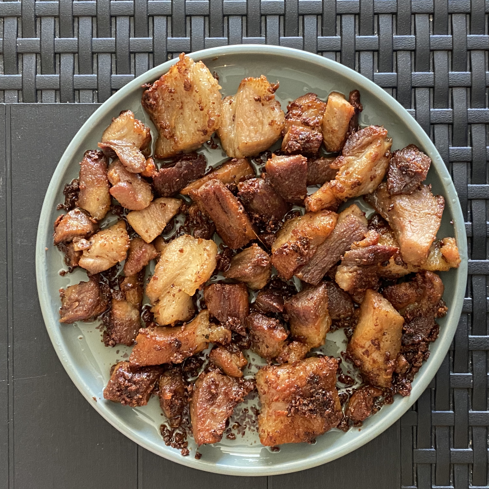

Adobo sa Asin

Description
Pork adobo in salt or adobong baboy sa asin is a popular dish in Bicol Region. Normally the pork boiled with vinegar, garlic, laurel and salt until all the liquid is absorbed. Sometimes they called it white adobo or adobong puti.
Ingredients
- 1/2 kilo pork, cut into serving pieces
- 2 cups water
- 1 garlic head, crushed
- 2 pieces bay leaves
- 1/2 cup vinegar
- 1 teaspoon salt
- 1 teaspoon peppercorns(optional)
- 1 small-sized white onion, sliced(optional)
- a pinch of chili flakes(optional)
Steps
- In a pan, arrange pork and add water. Bring to boil until the meat is tender. Add water if needed.
- Pour vinegar, garlic, bay leaves, pork broth cubes and salt.
- Continue cooking until all the liquid is absorbed.
- Adjust seasoning according to taste.
- Cook until the garlic turns to brown and the pork is start to render oil.
- Remove from heat and transfer to serving plate then serve!